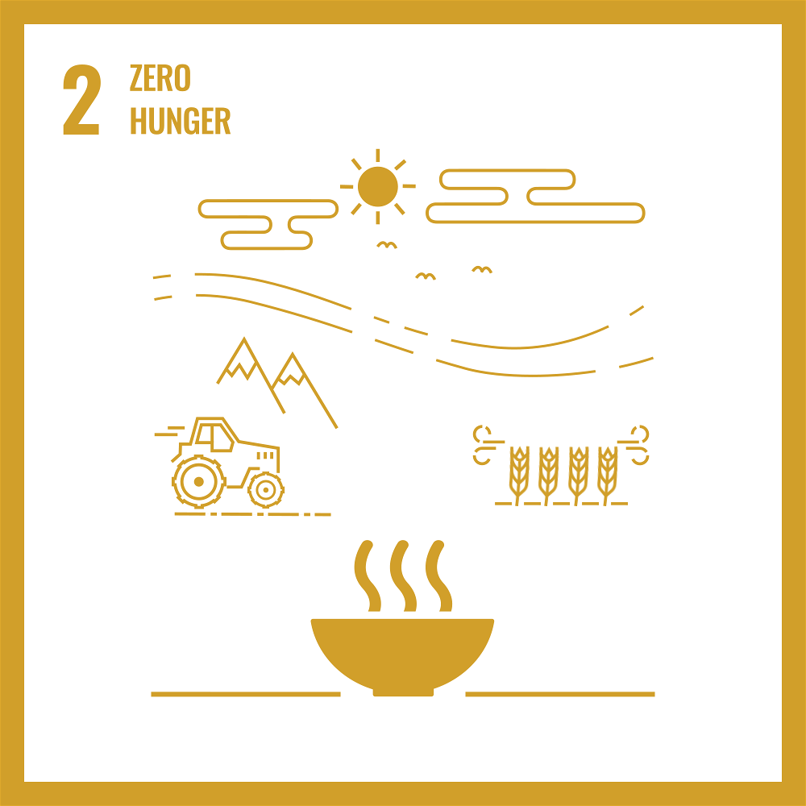
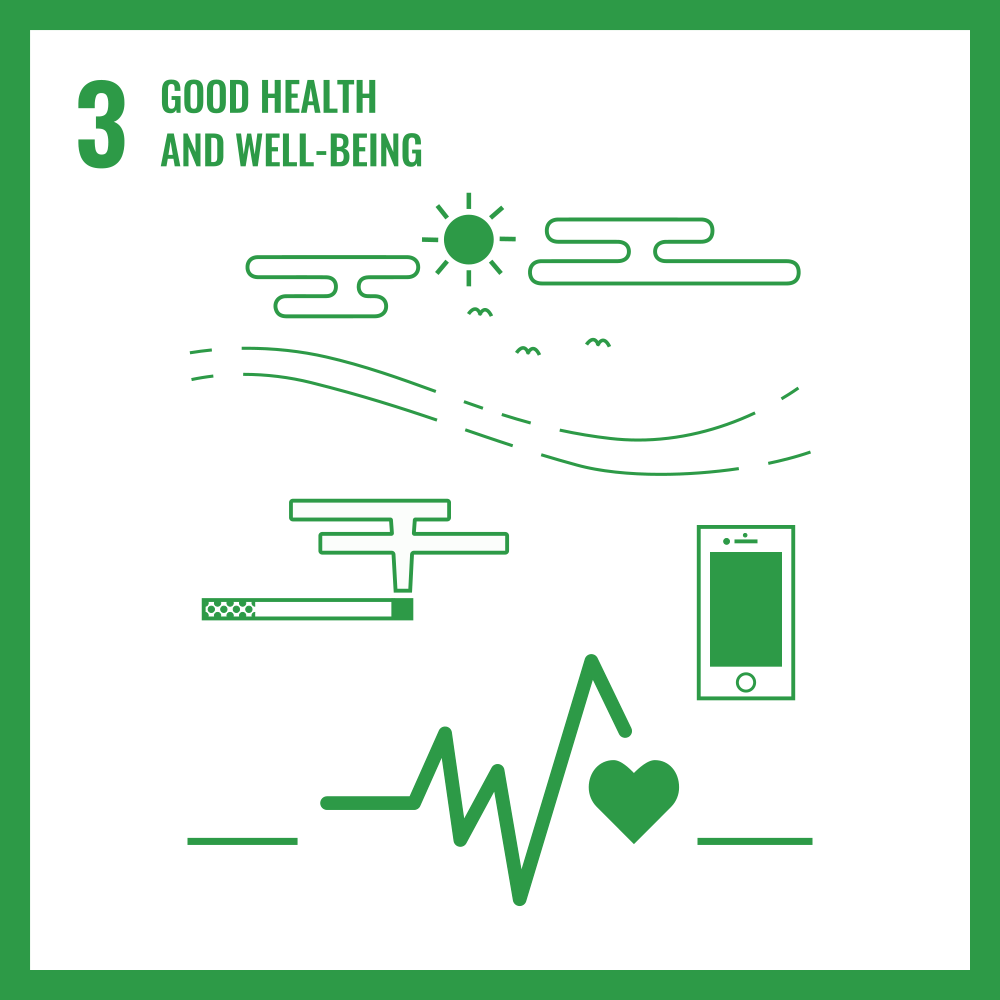
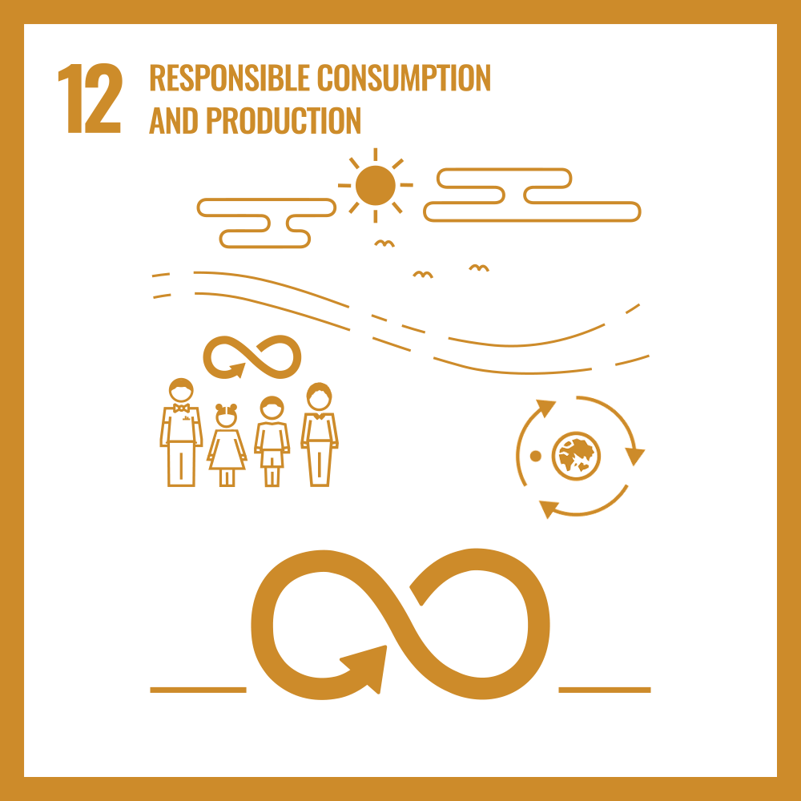
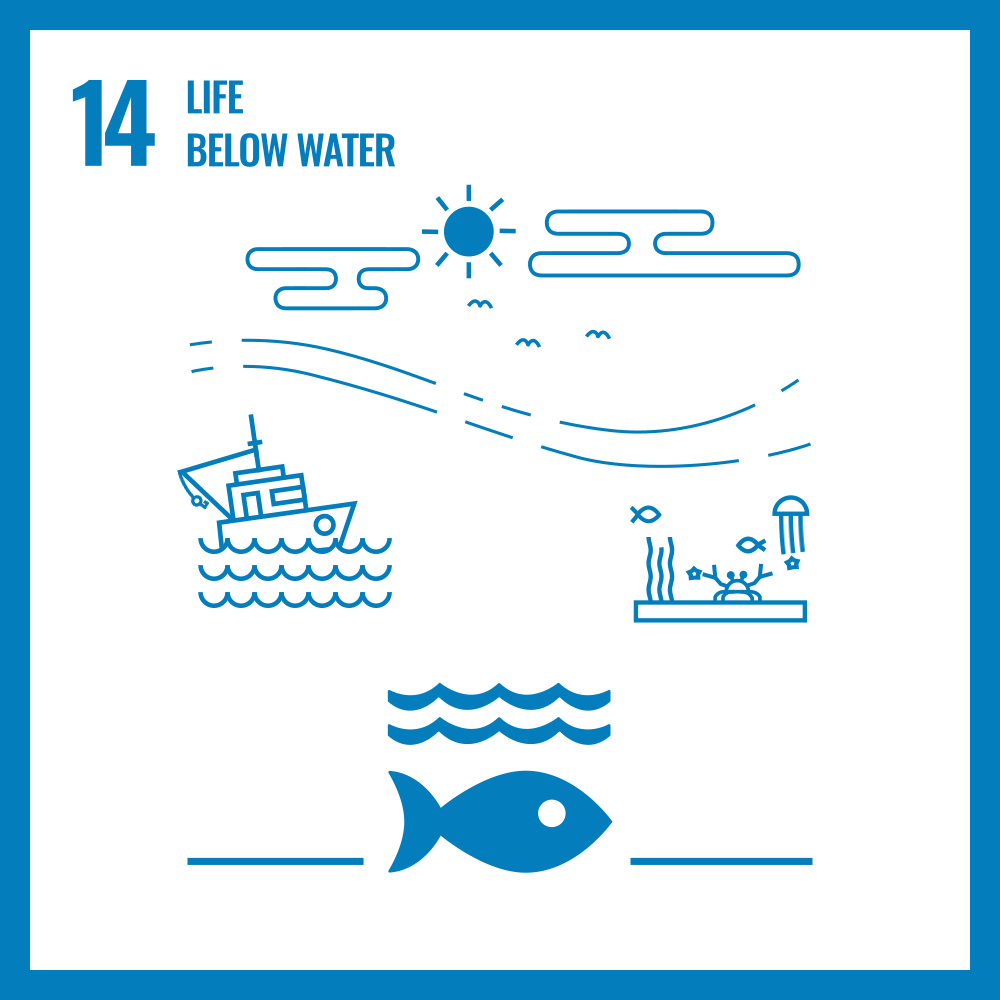
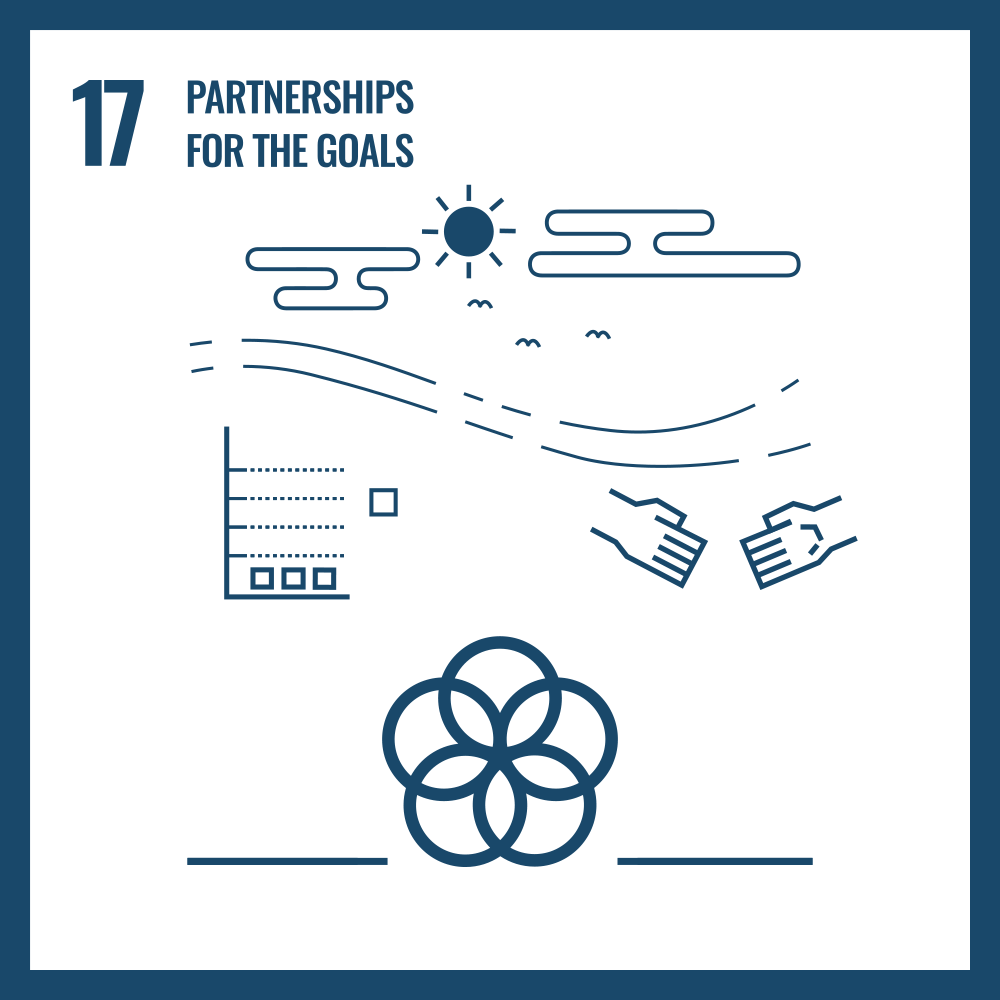

La Realidad Socioecológica
Medellín y el Valle de Aburrá operan bajo una dependencia crítica de cuencas externas (Norte y Oriente). El agua es el insumo vital que soporta nuestra industria y seguridad alimentaria.
A nivel global, la ONU advierte sobre la entrada a una era de "bancarrota hídrica". Con la intensificación de fenómenos climáticos extremos, la inseguridad hídrica deja de ser un tema ambiental para convertirse en un riesgo económico primario.
Mandato Normativo y de Financiación
El Artículo 41 de la Ley 99 de 1993 exige destinar al menos el 1% de los ingresos corrientes del Distrito para la adquisición y mantenimiento de áreas estratégicas abastecedoras.
De acuerdo con el Dec. 1449 de 1977; Los propietarios de predios están obligados a mantener en cobertura boscosa: los nacimientos de fuentes de aguas en una extensión por lo menos de 100 metros a la redonda de su periferia; una faja minima de 30 metros de ancha a cada lado de los cauces de los ríos, quebradas y arroyos, drenajes y depósitos de agua; y los terrenos con pendientes superiores al 100% (45°).

La Ciencia de la Restauración
Observa el impacto real de las Soluciones Basadas en la Naturaleza (SbN). Despliega esta sección para ver la transformación lenta desde un ecosistema degradado hacia un bosque ripario funcional.


Etapa 1 (Estado Degradado): Ausencia de bosque ripario. El suelo desnudo y la erosión aumentan la escorrentía superficial rápida, arrastrando sedimentos al cauce y disminuyendo drásticamente la infiltración y calidad del agua.
Estructura Programática Integrada
Un modelo sistémico de 6 programas diseñados bajo estándares internacionales. Despliega para ver el mapa mental y cada programa en detalle.

1. Riberas y Conectividad Vital
Presupuesto: $4.500M COP










Intervención en cuencas externas (ej. Río Grande y La Fe). Fortalecimiento de la estructura ecológica interviniendo bordes de ribera para mejorar la regulación hídrica.


2. Infraestructura Verde (SbN)
Presupuesto: $5.500M COP
Enfoque en cuencas internas (Corregimientos de Medellín). Transformación de quebradas y drenajes urbanos en ejes de infraestructura ecológica multifuncional.

3. Inteligencia HidroTerritorial (SIHT-Med)
Presupuesto: $3.000M COP
El "cerebro analítico" (SIHT-Med). Integración de datos interinstitucionales y modelación predictiva para la toma de decisiones informadas.
Explorador de Escenarios (SIHT-Med)
Escorrentía
Alta
Regulación
Baja
Vulnerabilidad
Crítica
Visor Geográfico de Vulnerabilidad
Puntos críticos de infraestructura y abastecimiento en el Valle de Aburrá y cuencas abastecedoras externas.

4. Gobernanza y Pactos
Presupuesto: $1.800M COP
Articulación y fortalecimiento de capacidades. Creación del Gran Pacto por la Seguridad Hídrica uniendo academia, comunidades, empresas y el sector público.

5. Cultura Ciudadana
Presupuesto: $2.200M COP
"El agua conecta todo". Estrategia de educación y apropiación social para construir una identidad hidro-territorial intergeneracional sólida en Medellín.

6. Valoración Ecosistémica (ROI)
Presupuesto: $2.000M COP
Cuantificación de beneficios ecológicos, sociales y económicos. Traducción de cada acción en retornos tangibles (ROI) para fundamentar decisiones.

Escuelas Taller del Agua
Una visión profunda que concibe el agua como un espacio de aprendizaje (skholé), equilibrando la contemplación poética del paisaje con la rigurosidad de los datos.
I. El Milagro del Agua
Espíritu, Arte y Filosofía. Despertar el asombro mediante lecturas de paisaje y bitácoras de dibujo naturalista.
II. Anatomía del Territorio
Geografía y Ecología. Entender la cuenca viva mediante mapeo comunitario e identificación de bioindicadores.
III. Ciencia Ciudadana
Democratización de datos. Transición de la contemplación al monitoreo con medición de parámetros fisicoquímicos.
IV. Habitabilidad y Acción
Resiliencia a través de soluciones reales: cosecha de agua, restauración de riberas y economía circular.
Asignación Financiera Estratégica
Desglose de la inversión total de $19.000M COP por programa, reflejando una clara priorización en infraestructura verde, inteligencia territorial y apropiación social.
Gobernanza y Transparencia
Arquitectura organizativa para asegurar una ejecución ágil y transparente, alineada con los estándares internacionales y el Distrito.
Este plan es producto de la alianza estratégica entre el Distrito de Medellín y CuencaVerde. Aportamos validación territorial, gerencia integral (4C) y la experiencia científica necesaria para traducir el mandato normativo en resultados tangibles.
"Actuar hoy para construir nuestro mañana"